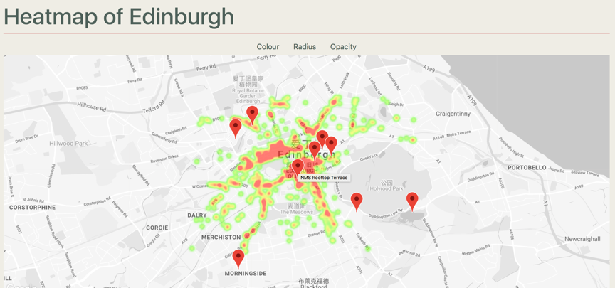
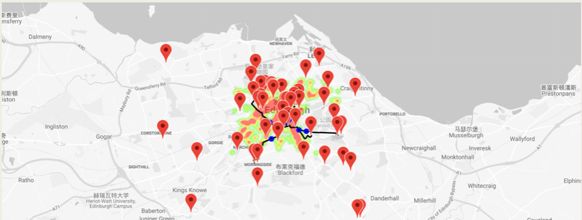
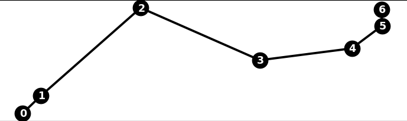
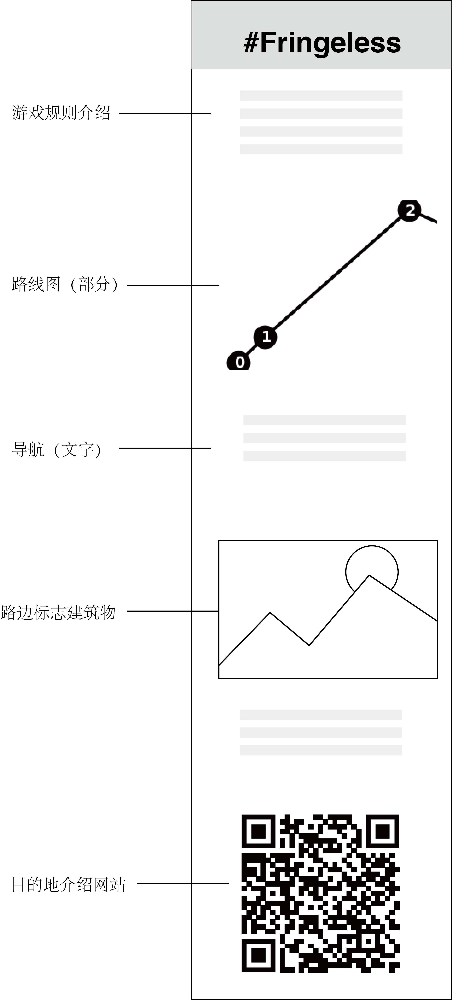

01
项目背景
每年八月份，爱丁堡会迎来盛大的艺术节。爱丁堡市内的观光客人达到一年来的顶峰。热闹非凡的 另一面是拥堵的城市交通，熙熙攘攘的人群，大街上特别是主要的艺术节演出场地，都会挤满游客。 城市拥挤给本地人出行、生活带来了不便，外地游客也不能感受爱丁堡古老平静的美。艺术节主办方和政府提出这一问题， 我们小组将设计一个能够提供：1）有效避让人群、2）进行城市深度游的路线装置。-
我的职责：
- 使用python收集整理并可视化艺术节期间爱丁堡的人口密集度数据
- 收集整理目的地地理信息数据，用python查询路线和导航命令
- 设计照片上传二维码对应的网页
- 参与需求讨论，需求整理，提出可行性方案

02 主题
首先，我们需要直观地传递“拥堵”的信息：哪里拥挤，哪里相对来说是人少的地方。结合所学，我们在数据“物理可视化（Physicalisation）”和“可视化（Visualisation）”中 作选择，为了更好地实现最终效果，我们提出了两套方案：1）使用物理可视化的方式将拥堵信息做成实物地图，结合VR技术，用户可以通过扫不同地点二维码，观察我们设定的地点的拥堵视频。 (2)使用数据可视化的方式，通过算法设计避开拥堵地区，生成“寻宝路线”，让游客带着探索的目的，“闹中取静”地游览城市。 考虑到VR技术的实现和物理可视化地图建模的难度，我们最终选择了第二套方案。主题确定为三个方面：数据可视化，IOT，还有“逃离”。接下来的内容将介绍实现的过程。数据可视化
此项目以数据为导向，1）可视化最为拥挤的地区； 2）查找最拥挤地区地理信息数据，辅助设计规避人群路线。IoT
实时更新城市拥堵情况，动态生成避让人群游览路线。“逃离”
数据
实现方式：使用Python从Google PopulartimesAPI中获取到爱丁堡一周内24个地点分类，共1092个位置的拥挤信息。 点击“静态”按钮查看某时爱丁堡的拥挤情况，点击“动态”查看一天24小时的拥挤情况变化。-  数据：1）爱丁堡城市地图：OpenStreetMap(上界限：55.963719, -3.22949；下界限：55.932490, -3.149196); 2）寻找某时“可逃离”区域：可视化1092个数据的某时刻（例上午9点），即找出最有可能拥堵的区域的地理信息（即经度纬度）。
- 一天内人口密度变动：1）Google populartimes API 获取24类地点（共1092个地点）一周的数据; 2）使用Matlab对数据处理：平均每天每时人口密度； 3）使用plotly中等降雨线图可视化拥挤情况.
路线
从起始点到终点，通过回避上一步可视化数据整理出的拥挤区域，得到一条”逃离路线“。 1）起始点：以装置实际放置位置为准，默认在爱丁堡王子街（市中心）； 2）终点：人工选取40个目的地，这些目的分别来自旅游局官网、app等。 3）路线：使用python在Googlemap中添加路线筛选条件，自动生成。所有目的地
导航路线
目的地类型
经过筛选，共找找出40个地点，分为四大类：1）历史遗迹；2）绿地（公园）；3）特色建筑；4）画廊博物馆 将四类目的地分别用四个按钮表示；硬件
1）使用Raspberry Pi进行数据储存和实时生成路线； 2）使用热敏打印机实现路线打印。路线形式设计与网站设计
左：路线设计 为了让“躲避”的过程更有趣味性，我们决定将导航路线设计为类似于“寻宝”游戏，丰富导航中的信息，如使用路边建筑物图片，导航文字指导，和部分路线图。打印的“小票”如下图所示。 右：网站设计——经验分享（社交功能） 在使用者到达目的地之后，用手机相机扫描路线最下方目的地的二维码，即可看见目的地的详细介绍，并上传途中拍摄的照片上传至我们的官方ins首页，查看／分享此次的寻宝游戏。
